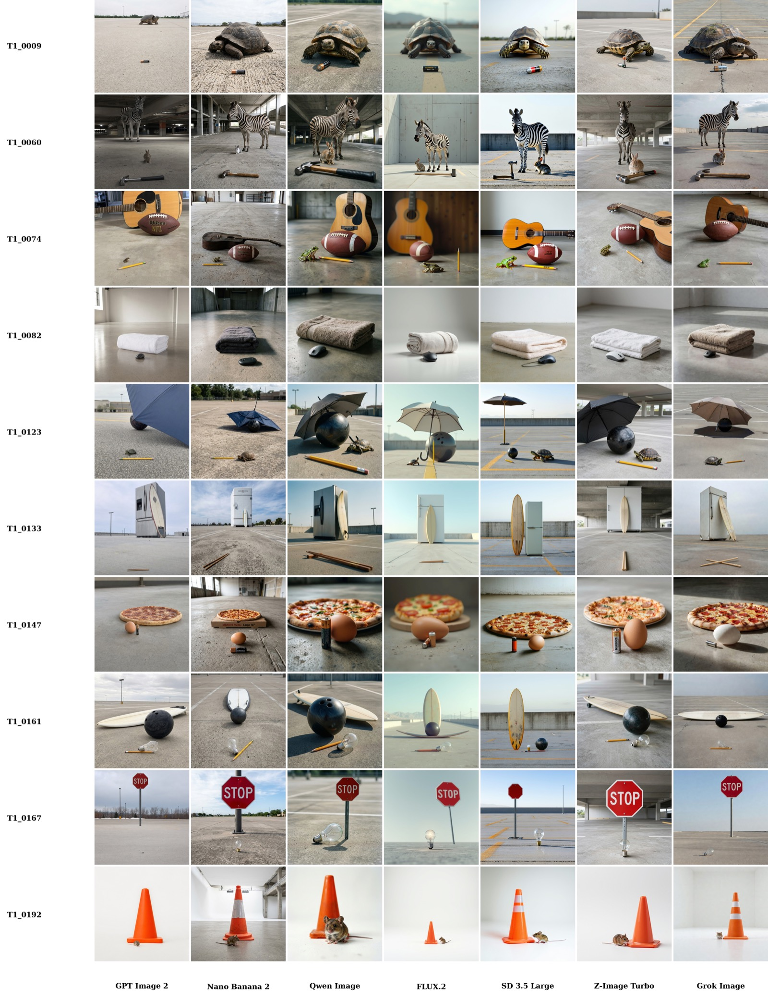
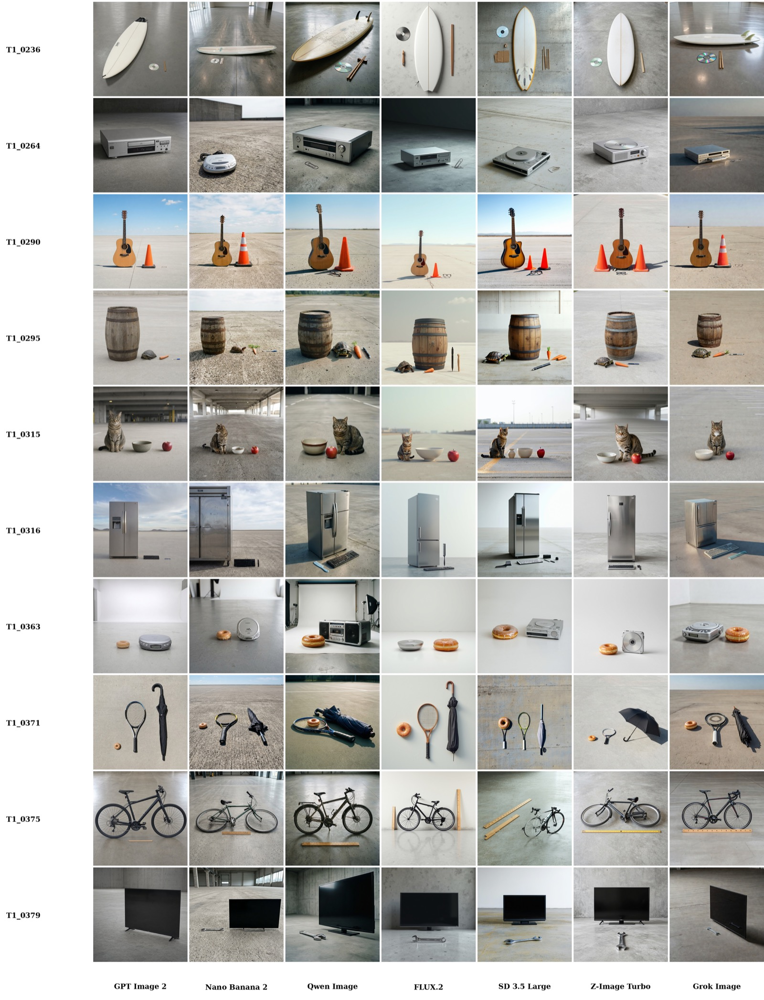
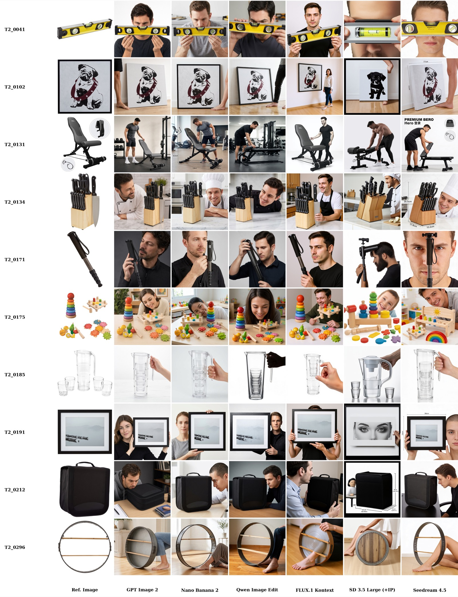
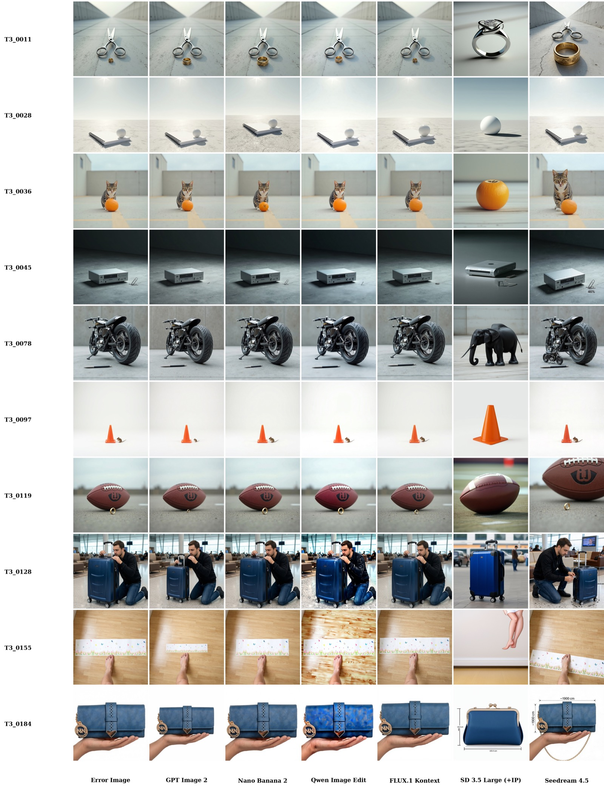

GenScale: A Benchmark for Relative Object Scale in Image Generation and Editing
1Boston University 2Creatify AI

Abstract
Modern image generation and editing systems can produce photorealistic, prompt-aligned images, but still often render familiar objects at implausible relative sizes. To measure this failure mode, we introduce GenScale, a benchmark and evaluation protocol for real-world relative object scale in image generation and editing. GenScale contains 900 image-level entries and 1,643 pairwise anchor-target scale relations across common-object generation, human-product generation with metric dimensions, and scale correction from failed generations. We further design a human-calibrated ordinal judge for scalable pairwise scale evaluation. Last but not the least, we introduce Rescale, a model-agnostic post-processing agent for localized scale correction without modifying the source generator. Experiments reveal that state-of-the-art image generators and editors cannot reliably observe relative scale yet, while Rescale consistently improves scale plausibility across generated and edited images. Together, GenScale establishes relative object scale as a distinct, measurable, and actionable capability for image generation systems.
Introduction
Recent image generators have made rapid progress in visual fidelity, stylistic diversity, and prompt adherence. These advances do not guarantee a basic requirement of physical realism: rendering familiar objects at plausible relative scale. An image can look photorealistic while still placing a banana, bicycle, person, or product at a mutually implausible size. This matters for advertising, product visualization, virtual character creation, and professional content production, where incorrect object proportions immediately undermine visual credibility.
GenScale studies a more specific question than generic physical plausibility: when several objects appear in a single image, can a generative model render their size relationships in a way that faithfully reflects the real world? A scene may satisfy coarse commonsense and layout constraints while still assigning an implausible size ratio to two familiar objects.

Existing benchmarks cover related axes such as object presence, compositional prompt following, commonsense plausibility, physical reasoning, and spatial relation control. Scale, however, is usually folded into broader semantic or spatial reasoning rather than evaluated as an object-level relation. GenScale explicitly represents scale as a pairwise anchor-target relation grounded in external physical-size metadata, covering implicit common-object size priors, human-product metric scale, and post-generation scale correction.
| Work | Broad Capabilities | Scale-focused Evaluation | ||||
|---|---|---|---|---|---|---|
| Compos. | Physical | Spatial | Obj.-obj. scale | Human-prod. size | Correction | |
| GenEval | ✓ | ✗ | ✓ | ✗ | ✗ | ✗ |
| T2I-CompBench++ | ✓ | ✗ | ✓ | ✗ | ✗ | ✗ |
| GenAI-Bench | ✓ | ✗ | ✗ | ✗ | ✗ | ✗ |
| PhyBench | ✗ | ✓ | ✗ | ✗ | ✗ | ✗ |
| GenSpace | ✗ | ✗ | ✓ | ✓ | ✗ | ✗ |
| GenScale | ✓ | ✓ | ✓ | ✓ | ✓ | ✓ |
The benchmark is paired with a human-calibrated ordinal evaluation protocol because raw pixel-space ratios are not enough: scale depends jointly on object identity, physical size, perspective, depth, occlusion, and placement. We also introduce Rescale, a model-agnostic correction agent that uses structured scale metadata to repair localized size errors without retraining the source generator.
GenScale Benchmark
GenScale evaluates physically grounded relative scale as a pairwise anchor-target relation with structured metadata, including object identities, physical reference lengths, expected 3D scale ratios, scenario labels, and product reference images when applicable. It contains 900 image-level entries and 1,643 pairwise scale relations across three tasks and five scenarios. Each anchor-target pair is the atomic evaluation unit, while image-level grouping is preserved for comparing model outputs.
The benchmark is grounded in two types of physical-size metadata. For common objects, it builds a category-level knowledge base from visually identifiable COCO/LVIS categories with relatively stable physical extent. For human-product generation, it uses product dimensions and reference images together with human anchors such as hand, head/face, foot/leg, and full body.
| Task | Scenario | Images | Pairs | Capability tested |
|---|---|---|---|---|
| T1 | S1: Natural Depth | 200 | 570 | Implicit scale priors under perspective |
| T1 | S2: Same Plane | 200 | 573 | Implicit scale priors with depth controlled |
| T2 | S3: Human-Product | 300 | 300 | Metric product scale with human anchors |
| T3 | S4: Auto-Discovery | 100 | 100 | Diagnose scale error and choose resize |
| T3 | S5: Precise Instruction | 100 | 100 | Execute exact numeric resize factor |
| Total | 900 | 1,643 | Generation, customization, and correction | |
Benchmark Construction
Task 1 is text-only image generation: each prompt contains two to four non-human common objects, with no numeric dimensions or reference images. S1 allows natural perspective and depth ordering; S2 constrains objects to approximately the same depth plane, reducing perspective ambiguity. Task 2 is reference-conditioned human-product generation: the model sees a product image and metric dimensions and must render plausible scale relative to a human body anchor. Task 3 converts failed generations from Tasks 1 and 2 into scale-aware image editing tasks.

Human-Calibrated Scale Evaluation
GenScale evaluates relative scale at the object-pair level. A calibrated ordinal judge assigns scores from 1 to 5, where 3 indicates physically plausible scale, lower scores indicate that the target is undersized, and higher scores indicate that the target is oversized. Score 3 corresponds to an estimated scale error within roughly ±20%, scores 2/4 to moderate errors, and scores 1/5 to severe errors. Pairs are marked invalid only when reliable scale judgment is impossible because objects are missing, merged, ambiguous, or too degraded to identify.
Human annotation is used to calibrate the automatic judge. Nine raters annotate a calibration split from Tasks 1 and 2; consensus is defined by the modal score, with ties broken by the median. The calibrated Gemini judge receives the same core evidence as humans: the image, anchor/target names, physical reference lengths, expected 3D ratio, and the ordinal rubric.
| Evaluator / Reference | Split | Exact ↑ | ≤ 1 ↑ | MAE ↓ | r ↑ | QWK ↑ |
|---|---|---|---|---|---|---|
| Human vs. Aggregate Consensus | T1+T2 | 65.1±7.0 | 94.0±3.2 | 0.413±0.099 | 0.764±0.076 | 0.754±0.077 |
| Human vs. LOO Consensus | T1+T2 | 58.0±6.6 | 93.3±3.0 | 0.491±0.093 | 0.719±0.069 | 0.706±0.070 |
| Gemini vs. Human Consensus | T1+T2 | 63.95 | 97.15 | 0.389 | 0.833 | 0.823 |
| Gemini vs. Human Consensus | T1 | 61.83 | 96.49 | 0.417 | 0.847 | 0.837 |
| Gemini vs. Human Consensus | T2 | 73.00 | 100.00 | 0.270 | 0.470 | 0.468 |

Rescale: Agentic Relative-Scale Correction
The GenScale formulation makes relative-scale errors actionable beyond evaluation. Rescale is a model-agnostic post-processing pipeline that repairs scale inconsistencies without modifying the source generator. Given an image, object identities, and physical size references, it diagnoses a scale anomaly, predicts a resize factor and contact preserving anchor point, and executes localized correction while preserving identity, layout, lighting, and background.
At inference time, a multimodal agent grounds the relevant objects and converts pairwise scale evidence into an edit plan. For common-object scenes, it aggregates inconsistent relations into a conservative object-level plan and edits over multiple rounds. For human-product scenes, the product is the editable target while the human body part is fixed. If the agent detects no reliable inconsistency or the edit is unsafe, Rescale returns no edit.
The planned edit is executed by a modular local insertion pipeline: segment the target, extract it as an identity reference, remove the original instance, complete the background, construct a resized edit mask, estimate depth when useful, and insert the corrected object back into the scene. After each edit, the agent verifies whether another correction round is needed.

Evaluation Results
GenScale exposes relative scale as a distinct unsolved capability. The main results below follow the paper order: state-of-the-art model benchmarking on GenScale, followed by Rescale correction and visual-quality preservation. All scale metrics are computed on valid pair-level judgments after filtering out missing or unscorable objects. For ordinal score s in {1,...,5}, with 3 denoting plausible scale, scale error is mean |s−3|; plausible is the percentage of relations scored 3; and severe denotes scores 1 or 5.
Benchmarking State-of-the-Art Models
Task 1 tests implicit common-object relative scale. Models receive only text prompts, so success requires using object-size priors and scene geometry rather than explicit dimensions. The dominant failure is mean regression: small real-world objects are often enlarged, while large real-world objects are often shrunk toward a typical visual size.
| Model | S1 | S2 | S1 + S2 | ||||||
|---|---|---|---|---|---|---|---|---|---|
| Err. ↓ | Plaus. ↑ | MR ↓ | Err. ↓ | Plaus. ↑ | MR ↓ | Err. ↓ | Plaus. ↑ | MR ↓ | |
| Nano Banana 2 | 0.51 | 65.1 | 15.8 | 0.69 | 47.8 | 48.1 | 0.60 | 56.5 | 31.8 |
| GPT-Image-2 | 0.78 | 51.1 | 12.2 | 0.63 | 52.8 | 36.0 | 0.71 | 51.9 | 24.1 |
| Z-Image-Turbo | 0.64 | 53.2 | 36.2 | 0.88 | 38.1 | 55.9 | 0.75 | 46.1 | 45.3 |
| Grok Image | 0.60 | 58.8 | 27.0 | 0.98 | 34.7 | 61.2 | 0.79 | 46.7 | 44.2 |
| Qwen-Image 2512 | 0.70 | 53.3 | 37.7 | 1.10 | 27.2 | 67.6 | 0.90 | 40.0 | 52.9 |
| FLUX.2 | 0.84 | 44.9 | 40.1 | 1.20 | 23.4 | 69.5 | 1.03 | 33.9 | 55.1 |
| SD3.5-Large | 0.96 | 36.6 | 47.0 | 1.18 | 24.9 | 70.0 | 1.07 | 31.1 | 57.8 |

The gap between S1 and S2 suggests that natural depth can hide scale errors: models appear better in S1 because perspective and depth ordering can absorb unrealistic physical ratios, while S2 exposes object-size mistakes more directly on the same image plane. The depth analysis above supports this interpretation.
Task 2 tests explicit metric scale in human-product interaction. Each prompt gives a product reference image, product dimensions, and a human anchor. This is easier than text-only common-object scale, but still not solved: reference-conditioned outputs may preserve product identity while misrepresenting physical size.
| Model | Valid img. / pairs | Scale error ↓ | Plausible (%) ↑ | Severe (%) ↓ |
|---|---|---|---|---|
| GPT-Image-2 | 294 / 294 | 0.231 | 78.9 | 2.0 |
| Nano Banana 2 | 295 / 295 | 0.268 | 75.6 | 2.4 |
| Seedream v4.5 | 295 / 295 | 0.302 | 74.9 | 5.1 |
| Qwen-Image-Edit-2511 | 297 / 297 | 0.327 | 71.0 | 3.7 |
| FLUX.1 Kontext-dev | 291 / 291 | 0.423 | 63.2 | 5.5 |
| SD3.5-Large + IP-Adapter | 270 / 270 | 0.600 | 52.6 | 12.6 |
Task 3 evaluates scale-error correction from failed generations. S4 requires automatic error discovery: the editor sees the erroneous image and scale references but must decide what to change. S5 gives the editable object, fixed reference, resize direction, and exact factor, isolating fine-grained numeric resize following from diagnosis.
| Model | S4 | S5 | S4 + S5 | ||||||||
|---|---|---|---|---|---|---|---|---|---|---|---|
| Err. ↓ | Plaus. ↑ | Gain ↑ | Err. ↓ | Plaus. ↑ | Gain ↑ | Valid | Err. ↓ | Plaus. ↑ | Gain ↑ | B / W | |
| Before edit | 1.27 | 20.4 | -- | 1.27 | 20.4 | -- | 200 / 200 | 1.27 | 20.4 | -- | -- |
| GPT-Image-2 | 0.96 | 40.2 | +0.33 | 0.41 | 66.3 | +0.87 | 195 / 195 | 0.68 | 53.3 | +0.60 | 91 / 9 |
| Nano Banana 2 | 1.03 | 31.3 | +0.24 | 0.93 | 33.7 | +0.34 | 197 / 197 | 0.98 | 32.5 | +0.29 | 55 / 11 |
| FLUX.1 Kontext-dev | 1.29 | 21.2 | -0.02 | 0.96 | 36.2 | +0.28 | 193 / 193 | 1.13 | 28.5 | +0.13 | 35 / 16 |
| Qwen-Image-Edit-2511 | 1.25 | 23.2 | +0.02 | 1.00 | 34.1 | +0.25 | 190 / 190 | 1.13 | 28.4 | +0.13 | 32 / 9 |
| Seedream v4.5 | 1.17 | 28.0 | +0.10 | 1.10 | 35.4 | +0.20 | 196 / 196 | 1.14 | 31.6 | +0.15 | 43 / 17 |
| SD3.5-Large + IP-Adapter | 0.93 | 40.0 | -0.20 | 1.31 | 22.0 | -0.16 | 74 / 74 | 1.23 | 25.7 | -0.17 | 10 / 19 |
Rescale Correction Results
Rescale is evaluated on matched image pairs before and after correction using the fixed calibrated GenScale judge. The results show that relative-scale mistakes are often locally correctable, and that structured scale diagnosis plus local insertion can improve scale plausibility more consistently than generic editing alone.
| Metric | Gemini | GPT | Z-Image | Grok | Qwen | FLUX | SD3.5 |
|---|---|---|---|---|---|---|---|
| Error before ↓ | 0.592 | 0.692 | 0.759 | 0.785 | 0.916 | 1.025 | 1.041 |
| Error after ↓ | 0.383 | 0.445 | 0.431 | 0.450 | 0.423 | 0.529 | 0.635 |
| Gain by Rescale ↑ | +0.208 | +0.246 | +0.328 | +0.335 | +0.493 | +0.495 | +0.406 |
| Task | Metric | Gemini | GPT | Seedream | Qwen | FLUX | SD3.5 | Rescale |
|---|---|---|---|---|---|---|---|---|
| Task 2 | Error before ↓ | 0.261 | 0.231 | 0.295 | 0.306 | 0.406 | 0.565 | -- |
| Task 2 | Error after ↓ | 0.086 | 0.090 | 0.168 | 0.144 | 0.228 | 0.256 | -- |
| Task 2 | Gain by Rescale ↑ | +0.175 | +0.141 | +0.126 | +0.162 | +0.178 | +0.309 | -- |
| Task 3 | Error before ↓ | 1.263 | 1.275 | 1.280 | 1.259 | 1.247 | 1.042 | 1.258 |
| Task 3 | Error after ↓ | 0.974 | 0.674 | 1.130 | 1.127 | 1.121 | 1.208 | 0.548 |
| Task 3 | Gain ↑ | +0.289 | +0.601 | +0.150 | +0.132 | +0.126 | -0.167 | +0.710 |
| Setting | CLIP-I ↑ | DINO ↑ | SSIM ↑ | SSIM-HF ↑ | LAION-Aes before / after ↑ | Q-Align-IQ before / after ↑ |
|---|---|---|---|---|---|---|
| Task 1 | 94.8 | 90.2 | 88.8 | 92.4 | 5.83 / 5.73 (-1.7%) | 4.74 / 4.67 (-1.5%) |
| Task 2 | 92.4 | 84.5 | 73.5 | 82.1 | 4.99 / 4.96 (-0.8%) | 4.88 / 4.88 (0.0%) |
| Task 3 | 95.6 | 88.9 | 89.3 | 92.9 | 5.83 / 5.73 (-1.2%) | 4.76 / 4.67 (-1.9%) |
The quality metrics indicate that scale correction does not simply trade geometric plausibility for degraded images. CLIP-I, DINO, SSIM, and SSIM-HF remain high despite the intended object-size changes, while no-reference aesthetics and image-quality scores change only slightly.
Additional Qualitative Examples
The following appendix-style visualizations provide larger sets of task examples and corrections. They are placed after the main paper narrative and results.




BibTeX
@article{li2026genscale,
title = {GenScale: A Benchmark for Relative Object Scale in Image Generation and Editing},
author = {Li, Lingxiao and Whitton, Max and Wu, Ledell and Gong, Boqing},
journal = {arXiv preprint arXiv:2609.00525},
eprint = {2609.00525},
archivePrefix = {arXiv},
primaryClass = {cs.CV},
url = {https://arxiv.org/abs/2609.00525},
year = {2026}
}